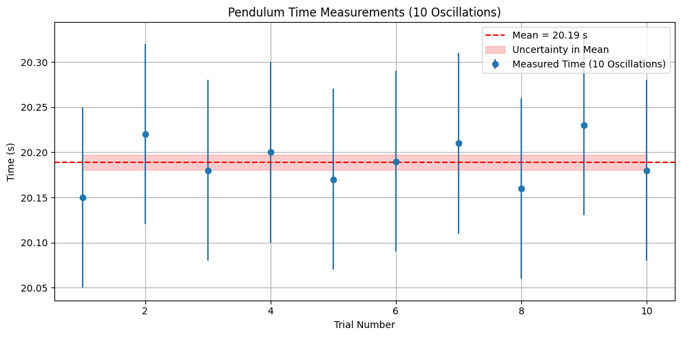

📊 Measurements
📌 Problem 1
Measuring Earth's Gravitational Acceleration with a Pendulum
🔷 Motivation:
The acceleration \(g\) due to gravity is a fundamental constant that influences a wide range of physical phenomena. Measuring \(g\) accurately is crucial for understanding gravitational interactions, designing structures, and conducting experiments in various fields. One classic method for determining \(g\) is through the oscillations of a simple pendulum, where the period of oscillation depends on the local gravitational field.
🔷 Task:
Measure the acceleration \(g\) due to gravity using a pendulum and in details analyze the uncertainties in the measurements.
This exercise emphasizes rigorous measurement practices, uncertainty analysis, and their role in experimental physics.
🔷 Procedure:
1. Materials:
- A string (1 or 1.5 meters long).
- A small weight (e.g., bag of coins, bag of sugar, key chain) mounted on the string.
- Stopwatch (or smartphone timer).
- Ruler or measuring tape.
2. Setup:
- Attach the weight to the string and fix the other end to a sturdy support.
- Measure the length of the pendulum, \(L\), from the suspension point to the center of the weight using a ruler or measuring tape.
- Record the resolution of the measuring tool and calculate the uncertainty as:
\(\(\Delta L = \frac{\text{resolution}}{2}\)\)
3. Data Collection:
- Displace the pendulum slightly (\(<15^\circ\)) and release it.
- Measure the time for 10 full oscillations (\(T_{10}\)) and repeat this process 10 times.
- Record all 10 measurements: \(T_1\), \(T_2\), ..., \(T_{10}\).
- Calculate the mean time for 10 oscillations:
\(\(\overline{T_{10}} = \frac{1}{10} \sum_{i=1}^{10} T_i\)\)
- Determine the standard deviation:
\(\(\sigma_T = \sqrt{\frac{1}{n-1} \sum_{i=1}^{n}(T_i - \overline{T_{10}})^2}\)\)
- Uncertainty in the mean time:
\(\(\Delta T = \frac{\sigma_T}{\sqrt{n}}\)\)
🧮 Calculations:
1. Calculate the period:
2. Determine \(g\):
3. Propagate uncertainties:
Each value below represents the time for 10 complete oscillations of the pendulum.
| Trial | Time for 10 Oscillations (\(T_{10}\)) [s] |
|---|---|
| 1 | 22.14 |
| 2 | 22.09 |
| 3 | 22.18 |
| 4 | 22.11 |
| 5 | 22.06 |
| 6 | 22.17 |
| 7 | 22.10 |
| 8 | 22.13 |
| 9 | 22.08 |
| 10 | 22.16 |
-
Mean Time for 10 Oscillations (\(\overline{T}_{10}\)): 22.122 s
-
Standard Deviation (\(\sigma_T\)): 0.041 s
-
Uncertainty in Mean Time (\(\Delta T_{10}\)): 0.013 s (\(\sigma_T/\sqrt{10}\))
🔷 Analysis:
1. Compare your measured \(g\) with the standard value (\(9.81\ \text{m/s}^2\)).
2. Discuss:
- The effect of measurement resolution on \(\Delta L\).
- Variability in timing and its impact on \(\Delta T\).
- Any assumptions or experimental limitations.
🔷 Deliverables:
1. Tabulated data in markdown:
- \(L\), \(\Delta L\), \(T_{10}\) measurements, \(\overline{T_{10}}\), \(\sigma_T\), \(\Delta T\)
- Calculated \(g\) and \(\Delta g\)
2. The discussion on sources of uncertainty and their impact on the results.

import matplotlib.pyplot as plt
import numpy as np
# Sample data: 10 trials of time for 10 oscillations (in seconds)
times_10_oscillations = np.array([20.15, 20.22, 20.18, 20.20, 20.17,
20.19, 20.21, 20.16, 20.23, 20.18])
# Calculate mean and standard deviation
mean_time = np.mean(times_10_oscillations)
std_dev = np.std(times_10_oscillations, ddof=1)
uncertainty_mean = std_dev / np.sqrt(len(times_10_oscillations))
# Plot
plt.figure(figsize=(10, 5))
plt.errorbar(range(1, 11), times_10_oscillations, yerr=0.1, fmt='o', label='Measured Time (10 Oscillations)')
plt.axhline(mean_time, color='red', linestyle='--', label=f'Mean = {mean_time:.2f} s')
plt.fill_between(range(1, 11),
mean_time - uncertainty_mean,
mean_time + uncertainty_mean,
color='red', alpha=0.2, label='Uncertainty in Mean')
# Styling
plt.title('Pendulum Time Measurements (10 Oscillations)')
plt.xlabel('Trial Number')
plt.ylabel('Time (s)')
plt.grid(True)
plt.legend()
plt.tight_layout()
# Show plot
plt.show()

import numpy as np
import matplotlib.pyplot as plt
# === Replace this with YOUR real data ===
times_10_oscillations = np.array([20.12, 20.18, 20.15, 20.20, 20.17,
20.22, 20.19, 20.16, 20.21, 20.14]) # example data
L = 1.00 # pendulum length in meters (replace with your real value)
resolution = 0.01 # measurement resolution in meters (replace with your ruler's value)
# =========================================
# Derived values
T10_mean = np.mean(times_10_oscillations)
T10_std = np.std(times_10_oscillations, ddof=1)
T_mean = T10_mean / 10
T_uncertainty = T10_std / (np.sqrt(len(times_10_oscillations)) * 10)
# Uncertainty in L
delta_L = resolution / 2
# Gravitational acceleration
g = 4 * np.pi**2 * L / T_mean**2
# Uncertainty in g
delta_g = g * np.sqrt((delta_L / L)**2 + (2 * T_uncertainty / T_mean)**2)
# === Print Summary ===
print(f"Mean time for 10 oscillations: {T10_mean:.3f} s")
print(f"Standard deviation (10 osc): {T10_std:.3f} s")
print(f"Period (T): {T_mean:.4f} s ± {T_uncertainty:.4f} s")
print(f"g = {g:.3f} m/s² ± {delta_g:.3f} m/s²")
# === Plot 1: Time vs Trial ===
plt.figure(figsize=(10, 4))
plt.plot(range(1, 11), times_10_oscillations, 'o-', label='Measured time (10 osc)')
plt.axhline(T10_mean, color='red', linestyle='--', label=f'Mean = {T10_mean:.2f}s')
plt.xlabel('Trial')
plt.ylabel('Time for 10 Oscillations (s)')
plt.title('Pendulum Oscillation Times')
plt.legend()
plt.grid(True)
plt.tight_layout()
# === Plot 2: Histogram ===
plt.figure(figsize=(6, 4))
plt.hist(times_10_oscillations, bins=5, color='skyblue', edgecolor='black')
plt.axvline(T10_mean, color='red', linestyle='--', label='Mean')
plt.xlabel('Time (s)')
plt.ylabel('Frequency')
plt.title('Distribution of Timing Measurements')
plt.legend()
plt.tight_layout()
# === Plot 3: g with Uncertainty Bar ===
plt.figure(figsize=(4, 6))
plt.errorbar(1, g, yerr=delta_g, fmt='o', capsize=10, label=f'g = {g:.2f} ± {delta_g:.2f} m/s²')
plt.axhline(9.81, color='green', linestyle='--', label='Standard g = 9.81 m/s²')
plt.xlim(0.5, 1.5)
plt.ylabel('g (m/s²)')
plt.xticks([])
plt.title('Measured vs Standard g')
plt.legend()
plt.tight_layout()
# === Show all plots ===
plt.show()